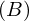

Theorem sub_right_side_into of type Forall¶
from the theory of proveit.logic.sets.equivalence¶
see dependencies
In [1]:
import proveit
# Automation is not needed when only building an expression:
proveit.defaults.automation = False # This will speed things up.
proveit.defaults.inline_pngs = False # Makes files smaller.
%load_theorem_expr # Load the stored theorem expression as 'stored_expr'
# import the special expression
from proveit.logic.sets.equivalence import sub_right_side_into
In [2]:
# check that the built expression is the same as the stored expression
assert sub_right_side_into.expr == stored_expr
assert sub_right_side_into.expr._style_id == stored_expr._style_id
print("Passed sanity check: sub_right_side_into matches stored_expr")
In [3]:
# Show the LaTeX representation of the expression for convenience if you need it.
print(stored_expr.latex())
In [4]:
stored_expr.style_options()
In [5]:
# display the expression information
stored_expr.expr_info()
| core type | sub-expressions | expression | |
|---|---|---|---|
| 0 | Operation | operator: 1 operand: 3 | |
| 1 | Literal |  | |
| 2 | ExprTuple | 3 | |
| 3 | Lambda | parameters: 4 body: 5 |  |
| 4 | ExprTuple | 13, 17, 18 | |
| 5 | Conditional | value: 6 condition: 7 |  |
| 6 | Operation | operator: 13 operand: 18 |  |
| 7 | Operation | operator: 9 operands: 10 | |
| 8 | ExprTuple | 18 |  |
| 9 | Literal |  | |
| 10 | ExprTuple | 11, 12 | |
| 11 | Operation | operator: 13 operand: 17 |  |
| 12 | Operation | operator: 15 operands: 16 |  |
| 13 | Variable |  | |
| 14 | ExprTuple | 17 |  |
| 15 | Literal |  | |
| 16 | ExprTuple | 17, 18 |  |
| 17 | Variable |  | |
| 18 | Variable |  |